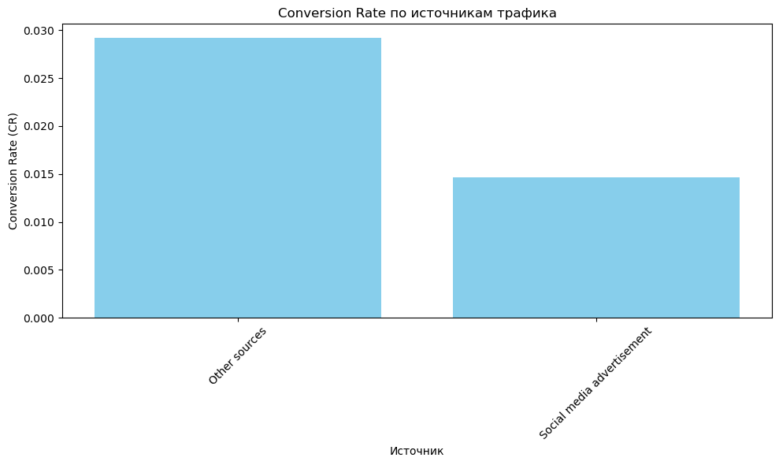
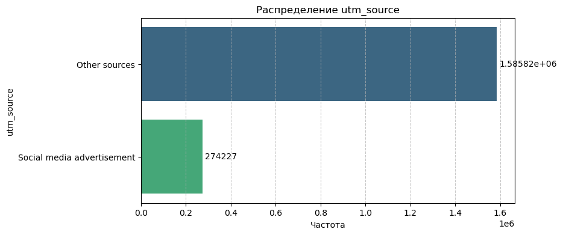
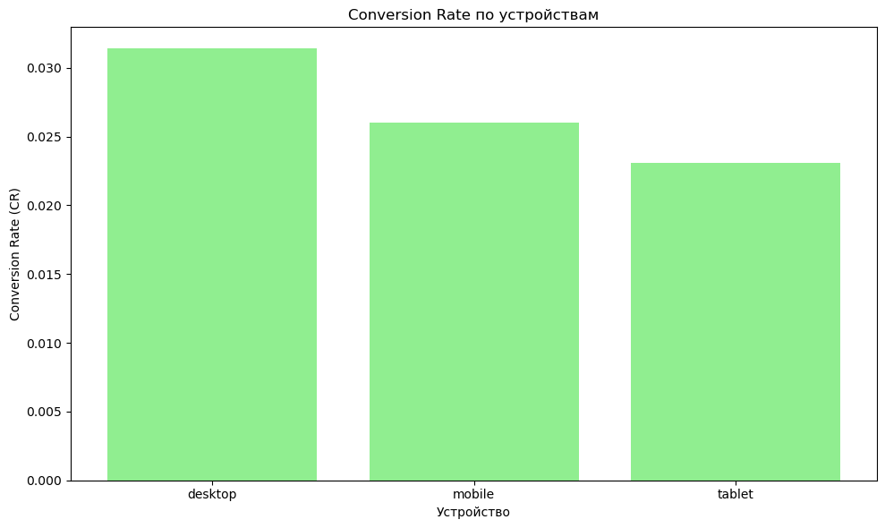
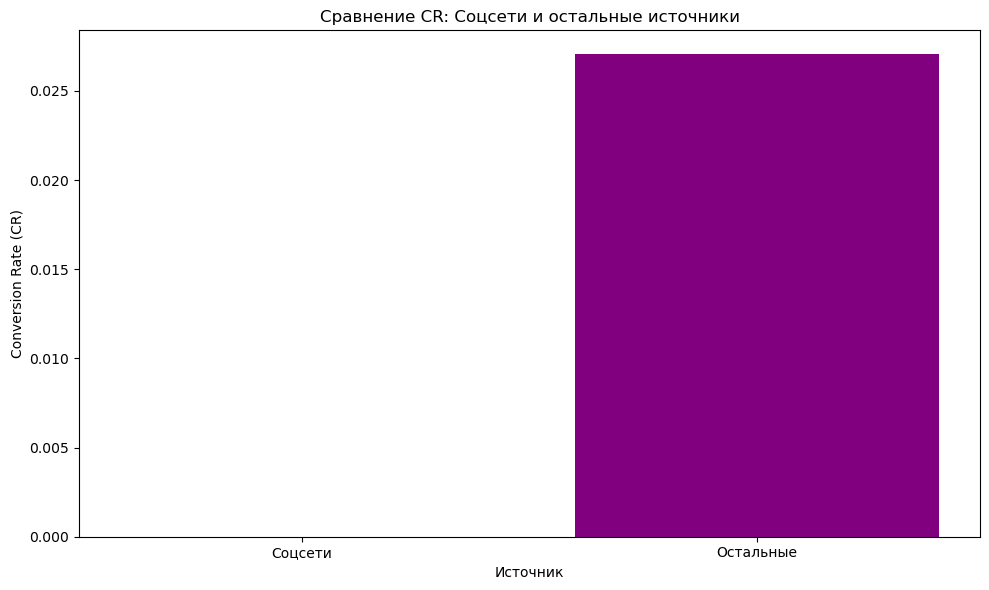

SberAutoSubscription Website Analysis
Final course project. Goal: evaluate traffic quality and conversion into target events, test key hypotheses, and answer product questions based on GA session and hit data.
Objectives
- Measure conversion rate (CR) by source, campaign, device, and location.
- Validate hypotheses about organic vs. paid traffic, device types, and presence cities.
- Provide actionable recommendations for marketing focus and content.
Hypotheses
- Organic vs Paid: CR for organic traffic does not differ from paid traffic.
- Mobile vs Desktop: CR for mobile traffic does not differ from desktop.
- Presence Cities: CR in Moscow region and Saint Petersburg does not differ from other regions.
Product Team Questions
- Which sources/campaigns/devices/locations bring the most qualified traffic (by volume and CR)?
- Which car brands and models are most in demand? Which have the best CR to target events?
- Should we increase our presence and ads in social media?
Stack & Tools
JupyterLab; Python libraries: dill, matplotlib, numpy, pandas, scipy, scikit-learn.
Process
Stage 1 — Preparation
- Load data:
ga_sessions.pkl,ga_hits.pkl(optionally with Dask / chunked loads). - Explore schema:
df.info(),df.head(),df.describe(). - Completeness:
isna().sum(); custom missing-values report; decide fill vs drop. - Tidy data: normalize target actions, traffic sources, social tags; cast dtypes
(e.g.,
int32/float32,category); drop unused columns.
Stage 2 — EDA
- Remove duplicates; impute: median/mean for numeric, most-frequent for categorical.
- Visualize distributions (histograms, bar charts); identify anomalies/outliers.
- Correlation (numeric features); CR cuts by
utm_source,geo_city,device_category.
Stage 3 — Hypothesis Testing
- H1: Organic vs Paid CR comparison.
- H2: Mobile vs Desktop CR comparison.
- H3: Presence cities vs other regions CR comparison.
Stage 4 — Answers for the Product Team
- Rank sources/campaigns/devices/locations by traffic and CR.
- Top-10 brands and models by demand and CR.
- Compare social media performance vs other sources.
Key Results
Traffic Sources
Other sources deliver the highest CR ≈ 2.92% and the largest volume (~1,585,815 sessions), outperforming social media (CR ≈ 1.47%, ~274,227 sessions).
Campaigns
Single-session campaigns show 100% CR but are not statistically meaningful. Campaign lndNIerCYECRQvBTyTye is the most reliable mix of volume and efficiency (CR ≈ 27.38%, 23 conversions, 84 sessions).
Devices
Best CR on desktop (~3.13%), followed by mobile (~2.60%) and tablet (~2.30%). However, traffic volume is dominated by mobile (~1,474,871 sessions; 38,379 conversions).
Locations
Cities with 100% CR (e.g., Beaver Falls, Brescia, Gravesend) have a single session and are not significant. Focus on high-volume regions for robust conclusions.
Brands & Models
Top brands by sessions: Skoda (~744,516), Mercedes‑Benz (~472,316), Volkswagen (~417,128).
Top models by sessions: Skoda Rapid (~442,513), Lada Vesta (~403,910), Volkswagen Polo (~318,075).
Social Media
Social ads currently underperform: sessions, conversions, and CR ≈ 0%. Compared to overall CR (~2.71%), social does not bring qualified traffic in its current setup.
Recommendations
- Reallocate spend to high‑CR sources (esp. “Other sources”) and scale proven campaigns like lndNIerCYECRQvBTyTye.
- Mobile UX focus: mobile drives the majority of traffic—optimize funnels to lift CR.
- Geo prioritization: double‑down on regions with both high volume and solid CR.
- Rethink social: audit targeting/creative/landing; pause or iterate quickly if CR stays near zero.
- Merchandising: feature high‑demand models (Skoda Rapid, Lada Vesta, VW Polo) more prominently.